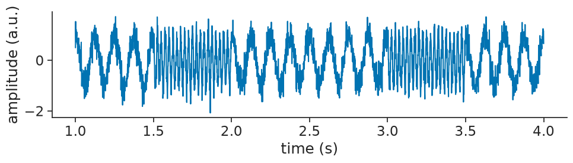
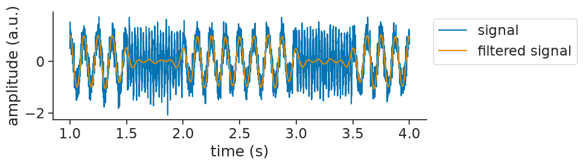
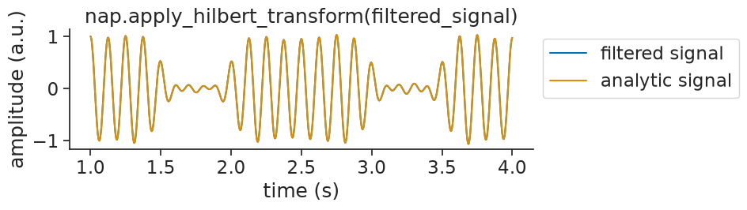
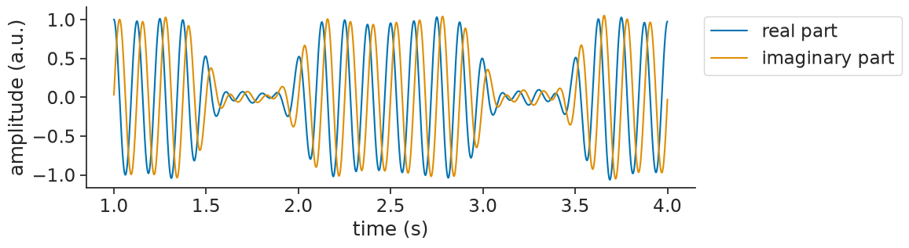
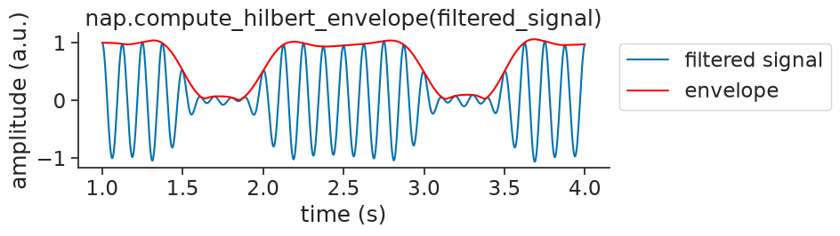
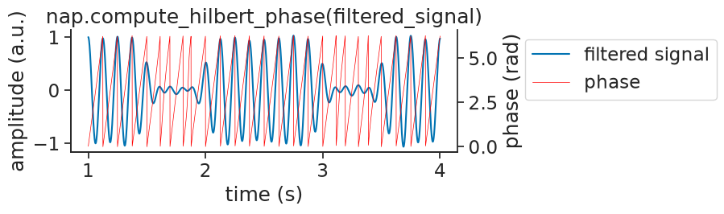
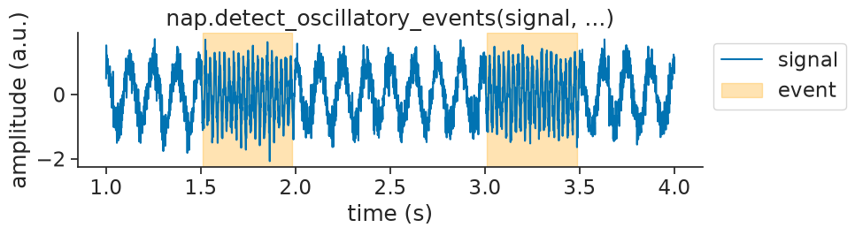

Phases and envelopes#
In this tutorial, we will introduce Pynapple’s functionality for computing signal phases
and envelopes.
Most of this functionality is part of the pynapple.process.signal module and is built on the
Hilbert transform.
Extracting the analytic signal#
Let us start by simulating a noisy oscillatory signal containing two frequencies:
sampling_rate_hz = 1000
times = np.arange(0, 5, 1 / sampling_rate_hz)
# Low frequency (8 Hz)
low_freq_hz = 8
signal = np.cos(2 * np.pi * low_freq_hz * times)
# High-frequency (40 Hz)
high_freq_hz = 40
segments = [(1.5, 2.0), (3.0, 3.5)]
for start, end in segments:
mask = (times >= start) & (times <= end)
signal[mask] = np.cos(2 * np.pi * high_freq_hz * times[mask])
# Add noise
signal = signal + 0.3 * np.random.normal(size=len(times))
# Convert to Tsd
signal = nap.Tsd(t=times, d=signal)
Let’s visualize that:

Now, imagine that we are interested in the low frequency part of the signal.
We can start by applying a bandpass filter using apply_bandpass_filter
to keep only the relevant frequencies (5-10Hz):
filtered_signal = nap.apply_bandpass_filter(
signal, (5, 10), fs=sampling_rate_hz, mode="butter"
)
filtered_signal
Time (s)
---------- -----------
0.0 0.41164
0.001 0.399015
0.002 0.385359
0.003 0.370677
0.004 0.354977
0.005 0.338272
0.006 0.320575
...
4.993 0.000265776
4.994 0.00031311
4.995 0.00034287
4.996 0.000357839
4.997 0.000360593
4.998 0.000353495
4.999 0.000338688
dtype: float64, shape: (5000,)
Let’s visualize that together with the original signal:

We can now use apply_hilbert_transform
to extract the analytic signal:
analytic_signal = nap.apply_hilbert_transform(filtered_signal)
analytic_signal
Time (s)
---------- ----------------------------------------------
0.0 (0.41163985536325964-0.29367687221261635j)
0.001 (0.39901522733643935-0.00450095173126185j)
0.002 (0.3853587465254819+0.015810511964485865j)
0.003 (0.37067651528504486+0.12372938723880353j)
0.004 (0.3549772293936849+0.14197655499943548j)
0.005 (0.33827221733205676+0.21262671164281724j)
0.006 (0.3205754730531929+0.2292965345811348j)
...
4.993 (0.00026577576133481675-0.007094925447376829j)
4.994 (0.00031311018963920106+0.005178304625532007j)
4.995 (0.0003428699666580542-0.034742219037758454j)
4.996 (0.00035783879101677484-0.02053031935319203j)
4.997 (0.00036059316183568627-0.09333596117967746j)
4.998 (0.0003534951258689944-0.0759372449020227j)
4.999 (0.0003386877737804298-0.31995329247003135j)
dtype: complex128, shape: (5000,)
If we visualize the analytic signal with the input signal, you will notice that the analytic signal appears identical to the original signal:
/home/runner/.local/lib/python3.12/site-packages/matplotlib/cbook.py:1810: ComplexWarning: Casting complex values to real discards the imaginary part
return math.isfinite(val)
/home/runner/.local/lib/python3.12/site-packages/matplotlib/cbook.py:1407: ComplexWarning: Casting complex values to real discards the imaginary part
return np.asanyarray(x, float)

This happens because the analytic signal is complex-valued. The real part is exactly the input signal. The imaginary part is the Hilbert transform (a 90° phase-shifted version). When you pass a complex signal to matplotlib, it automatically plots only the real part (see the warnings above).
To actually see what’s going on, you can plot the real and imaginary parts separately:

Computing the signal envelope#
From the analytic signal, it is often the case that we will compute other things.
For one, we can extract the envelope of a signal, by taking the absolute value.
To make things easy, Pynapple provides compute_hilbert_envelope
to compute the envelope in one go:
envelope = nap.compute_hilbert_envelope(filtered_signal)
envelope
Time (s)
---------- ----------
0.0 0.505661
0.001 0.399041
0.002 0.385683
0.003 0.390781
0.004 0.382317
0.005 0.399548
0.006 0.394139
...
4.993 0.0070999
4.994 0.00518776
4.995 0.0347439
4.996 0.0205334
4.997 0.0933367
4.998 0.0759381
4.999 0.319953
dtype: float64, shape: (5000,)
Visualizing the envelope over the signal:

Computing the signal phase#
We can also estimate the signal’s phase, by taking angle and wrapping.
To make things easy, Pynapple provides compute_hilbert_phase
to compute the phase in one go:
phase = nap.compute_hilbert_phase(filtered_signal)
phase
Time (s)
---------- --------
0.0 5.6635
0.001 6.27191
0.002 0.041005
0.003 0.322165
0.004 0.380472
0.005 0.56116
0.006 0.620898
...
4.993 4.74983
4.994 1.5104
4.995 4.72226
4.996 4.72982
4.997 4.71625
4.998 4.71704
4.999 4.71345
dtype: float64, shape: (5000,)
Visualizing the phase with the signal:

Detecting oscillatory events#
Having looked at the low frequency part of our signal, we might also be interested in the high frequency part.
To start with, we might simply be interested in finding the epochs where the signal is oscillating
at high frequencies.
Pynapple provides the detect_oscillatory_events
exactly for such a goal.
To get it to work nicely, you will have to the tune the following detection parameters:
frequency band: the band of frequencies you are interested in
threshold band: minimum and maximum thresholds to apply to the z-scored envelope of the squared signal
duration band: minimum and maximum duration of the events
minimum interval between events
events = nap.detect_oscillatory_events(
data=signal,
epochs=signal.time_support,
frequency_band=(35, 45),
threshold_band=(1,5),
duration_band=(0.4,0.6),
min_interval=0.05,
)
events
index start end power amplitude peak_time
0 1.512 1.984 0.15 1.12 1.82
1 3.009 3.488 -0.1 1.1 3.11
shape: (2, 2), time unit: sec.
We can then visualize the found events on top of the original signal as validation:
